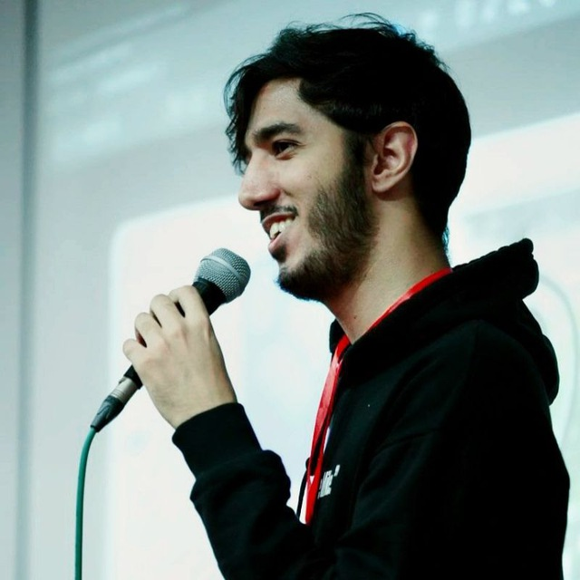

Final Year Bachelor Student at Sharif University of Technology
Email: imanm1381[at]gmail.com
Research Interests:
Human-AI Collaboration
AI in Education
Ethics and Fairness in AI
Interactive Systems and HCI
Large Language Models
Home
Publications
Service
About Me
I am a final-year Computer Engineering student at Sharif University of Technology.
My main research interests are Human-Computer Interaction, Large Language Models, and Privacy-Security.
I have volunteered as a Research Assistant at Duke University, the Chinese University of Hong Kong, and the University of Salerno, working on projects like decentralized social media platforms and improving Large Language Models.
I am passionate about designing AI systems that enhance human-AI collaboration and help people improve their skills.
Selected Awards
National University Entrance Exam for Masters in Computer Science, Ranked 41th among more than 15,000 participants (2023)
Bronze Medalist of the International Blockchain Olympiad (2022)
National University Entrance Exam for Masters in Computer Science, Ranked 26th among more than 15,000 participants (2022)
National University Entrance Exam of Iran (Konkur), Ranked 125th among more than 144,000 participants (2020)
National Organization for Development of Exceptional Talents (NODET) Entrance Exam, Ranked in the top 120 among more than 11,000 participants (top 1%)
Research Experience
Interdisciplinary Security, Privacy, and Interaction Research Lab (InSPIre Lab)
April 2023 - Now
Research Assistant | Duke University, Supervisor: Dr. Pardis Emami-Naeini
- We've conducted a novel HCI research study focused on the perceptions of social media security and privacy among users in Iran. This involved the selection of 22 participants diverse in age, gender, and technological expertise, all residing within the country.
- I played a pivotal role in designing the study and orchestrating semi-structured interviews, which unearthed a general limited understanding of security and privacy concerns among the users, particularly with domestic social media platforms.
- I also authored the research paper, synthesizing interview data to highlight the dichotomy between trust in non-domestic versus domestic social media platforms, despite users' limited knowledge of the underlying security and privacy features.
University of Salerno (UNISA)
June 2023 - May 2024
Research Assistant | University of Salerno, Supervisor: Dr. Vittorio Fuccella
- I contributed to a novel approach and developed code for information retrieval from academic documents and papers using Large Language Models (LLMs). Also, we created a customized dataset to evaluate model performance, culminating in the acceptance of our paper at CHI2024 Workshop on LLMs as Research Tools.
CUHK Reliable Computing Laboratory (CURE Lab)
January 2023 - November 2023
Research Intern | Chinese University of Hong Kong, Supervisor: Prof. Qiang Xu
- We engaged in groundbreaking research aimed at enhancing the robustness of Large Language Models (LLMs) utilizing a one-shot learning method.
- I developed and programmed a novel approach by training multiple LLMs on distinct data subsets, then integrating their outputs through a weighted averaging technique to reinforce model resilience.
- I also executed comprehensive testing on various datasets, and implemented each aspect of the model's coding, significantly contributing to the project's experimental framework.
Tehran Institute for Advanced Studies (TeIAS)
September 2022 - September 2023
Research Assistant | TeIAS, Supervisor: Dr. Sharareh Alipour
- We've worked on two Computer Vision and HCI Education-based papers. The first has been accepted in the LBW track of CHI 2024 conference, while the second has been accepted as a full-paper at CSCW 2024. At the core of our research lie the principles of HCI, Education, and AI. Our latest project involves the creation of an AI-powered fashion recommendation system designed to simplify the process of selecting gifts.
- I implemented a Blockchain-based education website, using Django for Backend API, React for Frontend design and Docker.
Institute for Research in Fundamental Sciences (IPM)
January 2022 - September 2022
Research Assistant | IPM, Supervisor: Dr. Sharareh Alipour
- I contributed to the development of a blockchain-enabled educational platform, which we trialed across four live classes at Sharif University of Technology. This innovative work was recognized with a bronze medal at the International Blockchain Olympiad (IBCOL) 2022, and it further garnered a gold medal at the National Blockchain Olympiad.
Sharif University of Technology (SUT)
May 2024 - December 2024
Research Assistant | SUT, Supervisor: Dr. Mohammad Hossein Rohban
- I contributed to the development of a novel decentralized social media platform with a focus on enhancing fairness and diversity through user-driven policy-making. We designed and implemented a Transformer-based model to learn and adapt to users' preferred policies, improving user experience and engagement.
Sharif University of Technology (SUT)
May 2023 - December 2023
Research Assistant | SUT, Supervisor: Dr. Mohsen Ansari
- I contributed to the development of an innovative approach for mobility-aware task offloading in vehicular fog computing systems, focusing on migration avoidance to ensure seamless service delivery. This work is currently under review for publication.
Teaching Experience
Sharif University of Technology (SUT)
Fall 2021 - Fall 2024
- Head Teaching Assistant - Numerical Computations - Dr. Hossein Ghorban, Prof. Sarbazi Azad - Fall 2022
- Head Teaching Assistant - Compiler Design - Ms. Hosseinmardi - Fall 2023 & Spring 2024
- Head Teaching Assistant - Design of Algorithms - Dr. Abam, Dr. Bahrami - Spring 2024
- Head Teaching Assistant - Data Structures and Algorithms - Dr. Abam, Dr. Bahrami - Fall 2023
- Head Teaching Assistant - Mobile Programming - Dr. Ahmadi Nik - Spring 2024
- Teaching Assistant - Machine Learning - Dr. Seyyedsalehi - Spring 2024
- Teaching Assistant - Probability and Statistics for Engineering - Dr. Najafi - Fall 2023
- Teaching Assistant - Linear Algebra - Dr. Hossein Ghorban - Spring 2023 & Spring 2022 & Fall 2022
- Teaching Assistant - Game Theory - Dr. Seddighin - Spring 2024
- Teaching Assistant - Computer Architecture - Dr. Laleh Arshadi - Fall 2023 & Spring 2023 & Fall 2022
- Teaching Assistant - Database Design - Mr. Akhi - Spring 2024
- Teaching Assistant - Advanced Programming in Java - Dr. MohammadAmin Fazli - Spring 2023 & Spring 2022
- Teaching Assistant - Mobile Programming - Dr. Nari - Spring 2023
- Teaching Assistant - Digital Systems Design - Dr. Bayat Sarmadi - Fall 2023